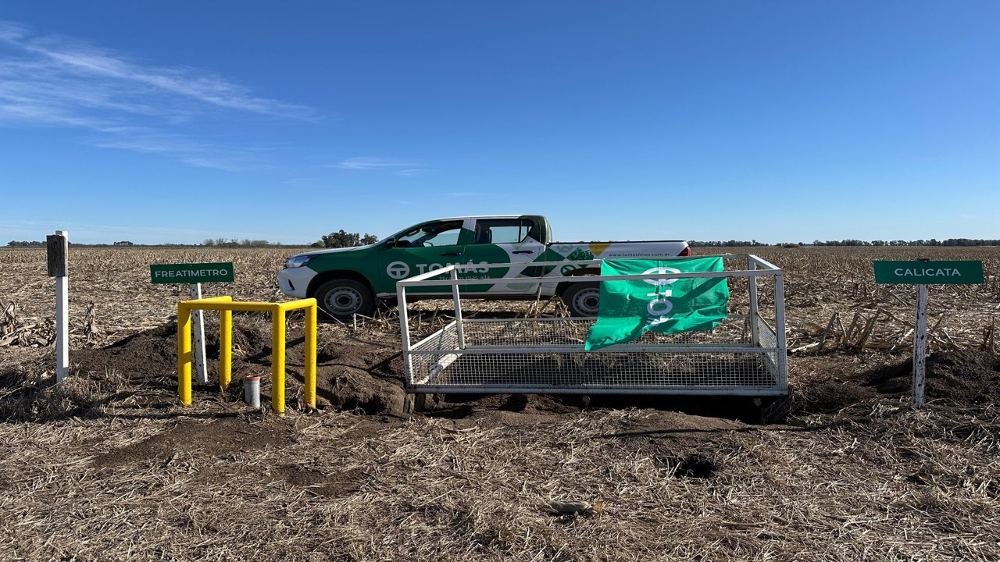
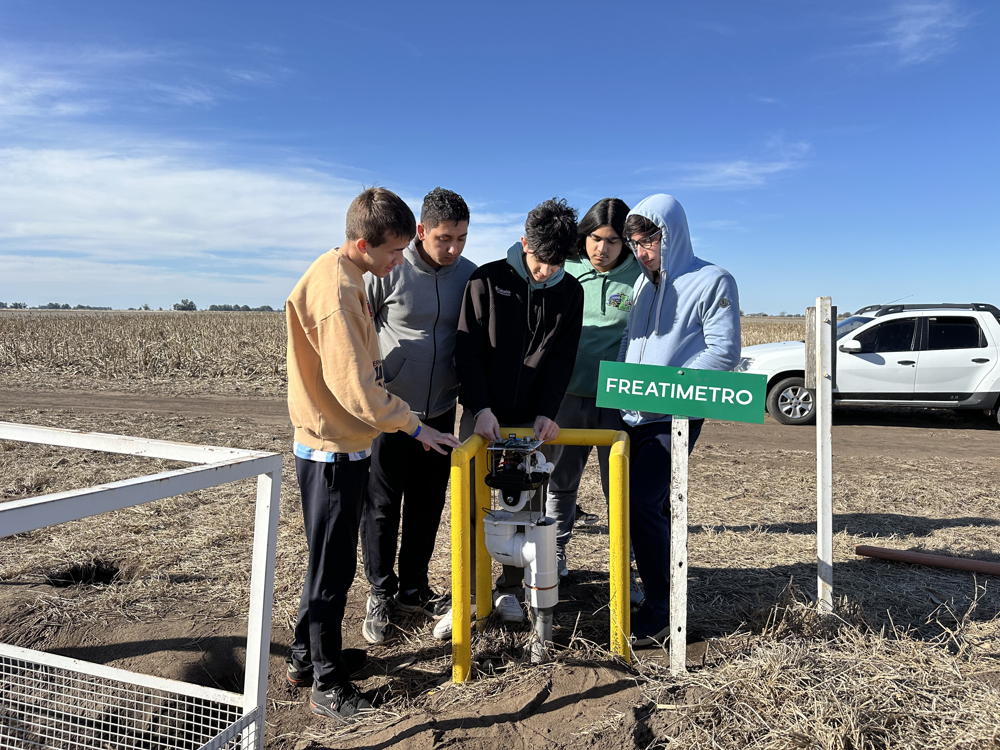
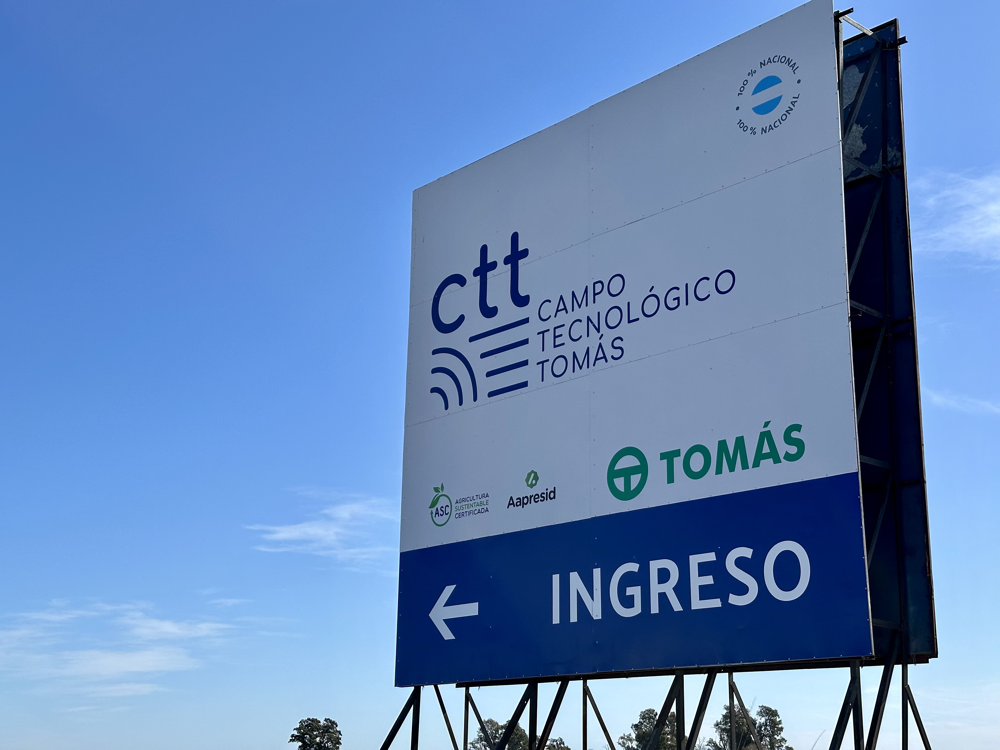
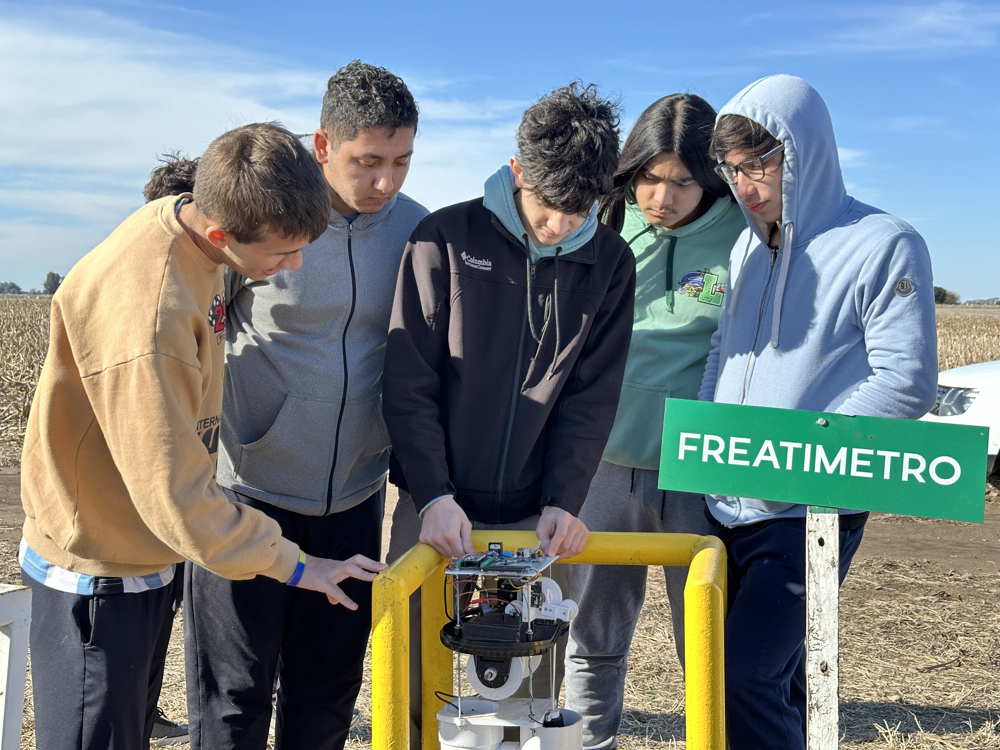
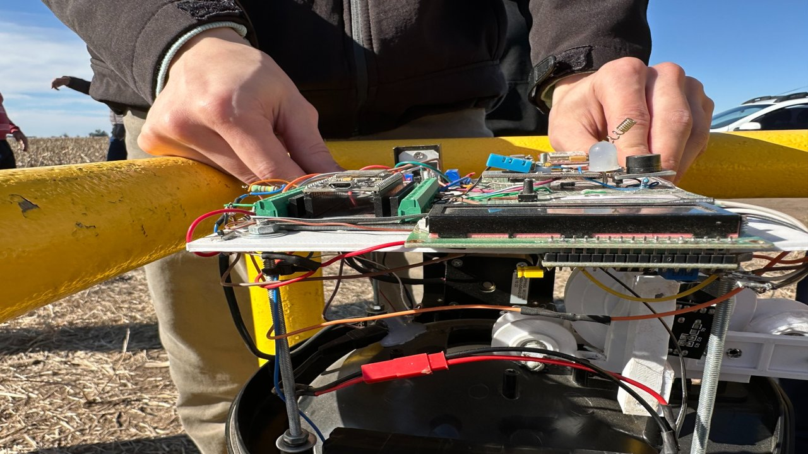

FREATÍMETRO DIGITAL
- Principal
- Fotos
- Mapa

Bienvenido a la Red de Freatímetros
Monitoreá los niveles de la napa por localidad
Cadret
Hortensia
Moctezuma
Smith
Mapa de la zona
Imágenes del Freatímetro



